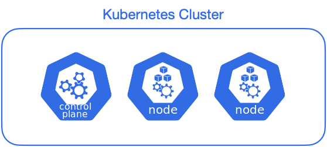
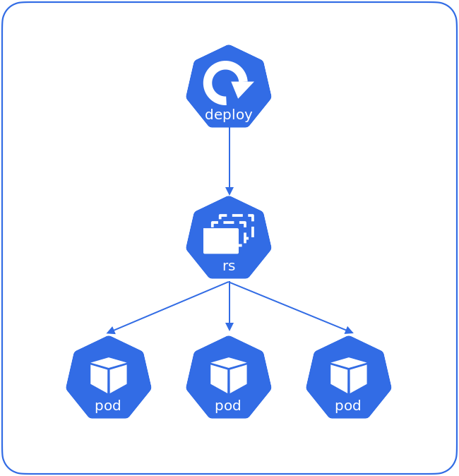
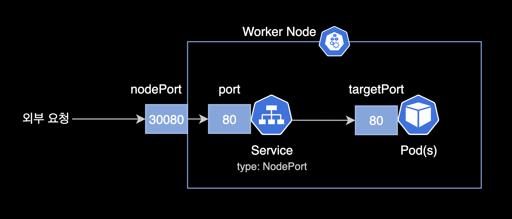
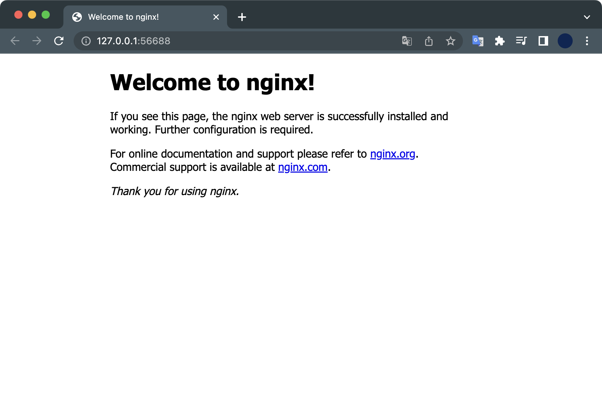

minikube 멀티노드 구성
개요
minikube를 이용해 3대의 노드(1 master node + 2 worker node)를 생성해서 Kubernetes 클러스터 구성하는 방법을 설명합니다.

환경
- Hardware : macBook Pro (16", M1 Pro, 2021)
- OS : macOS Monterey 12.4
- minikube v1.26.0
- Docker Desktop 4.8.2 (79419)
노드 3대를 생성할 예정이기 때문에 하드웨어의 메모리 리소스가 최소 8GB 이상은 되어야 안정적으로 실습할 수 있습니다.
전제조건
-
minikube가 설치되어 있어야 합니다.
-
docker desktop이 설치되어 있어야 합니다.
-
kubectl이 설치되어 있어야 합니다.
이 글에서는 필수 패키지 설치에 대한 가이드는 다루지 않습니다.
실습하기
1. 멀티노드 생성
3대의 노드로 구성된 minikube 클러스터를 생성합니다.
$ minikube start \
--driver='docker' \
--profile='multinode-lab' \
--cni='calico' \
--kubernetes-version='stable' \
--nodes=3
명령어 옵션 설명
--driver='docker' : 도커를 하이퍼바이저로 사용합니다.
--profile='multinode-lab' : multinode-lab이라는 이름의 프로파일을 생성합니다.
--cni='calico' : 컨테이너 네트워크 인터페이스를 calico로 지정합니다.
- auto, bridge, calico, cilium, flannel, kindnet 중 하나를 선택할 수 있습니다.
--kubernetes-version='stable' : 노드에 설치되는 쿠버네티스 버전을 안정화된 버전으로 지정합니다.
--nodes=3 : 노드 3대로 구성된 클러스터를 생성합니다.
2. 노드 상태 확인
minikube
$ minikube status -p multinode-lab
multinode-lab
type: Control Plane
host: Running
kubelet: Running
apiserver: Running
kubeconfig: Configured
multinode-lab-m02
type: Worker
host: Running
kubelet: Running
multinode-lab-m03
type: Worker
host: Running
kubelet: Running
3대의 노드가 모두 정상 실행중(Running)이다. type: 값을 보면 해당 노드가 Master node(Control plane)인지 Worker node인지 구분할 수 있습니다.
kubectl
kubectl 명령어를 사용해서도 쿠버네티스 클러스터 노드의 상태를 확인할 수 있습니다.
$ kubectl get node
NAME STATUS ROLES AGE VERSION
multinode-lab Ready control-plane 37m v1.24.1
multinode-lab-m02 Ready <none> 36m v1.24.1
multinode-lab-m03 Ready <none> 36m v1.24.1
컨트롤 플레인 1대와 워커노드 2대로 구성된 걸 확인할 수 있습니다.
전체 노드에는 2022년 6월 기준으로 안정화 버전인 kubernetes v1.24.1이 설치되었습니다.
3. deployment 배포
deployment yaml 작성
현재 경로에 nginx-deploy.yaml 파일을 생성합니다.
$ cat << EOF > ./nginx-deploy.yaml
apiVersion: apps/v1
kind: Deployment # 타입은 Deployment
metadata:
name: nginx-deployment
labels:
app: nginx
spec:
replicas: 3 # 3개의 Pod를 유지한다.
selector: # Deployment에 속하는 Pod의 조건
matchLabels: # label의 app 속성의 값이 nginx 인 Pod를 찾아라.
app: nginx
template:
metadata:
labels:
app: nginx # labels 필드를 사용해서 app: nginx 레이블을 붙힘
spec:
containers: # container에 대한 정의
- name: nginx # container의 이름
image: nginx:1.7.9 # Docker Hub에 업로드된 nginx:1.7.9 이미지를 사용
ports:
- containerPort: 80
EOF
매니페스트 내용을 간단하게 요약하자면 3개의 nginx 파드를 배포하는 deployment입니다.

deployment 배포
작성한 yaml 파일을 사용해서 deployment를 배포합니다.
$ kubectl apply -f nginx-deploy.yaml
deployment.apps/nginx-deployment created
상태확인
nginx 파드 상태를 확인합니다.
3개의 nginx 파드가 생성되고 있습니다.
$ kubectl get pod
NAME READY STATUS RESTARTS AGE
nginx-deployment-84df99548d-csxnp 0/1 ContainerCreating 0 8s
nginx-deployment-84df99548d-fmnx9 0/1 ContainerCreating 0 8s
nginx-deployment-84df99548d-nsmsf 0/1 ContainerCreating 0 8s
잠시 기다리면 상태가 Running으로 바뀌며 pod 생성이 완료됩니다.
$ kubectl get pod -o wide
NAME READY STATUS RESTARTS AGE IP NODE NOMINATED NODE READINESS GATES
nginx-deployment-84df99548d-csxnp 1/1 Running 0 2m19s 10.244.150.129 multinode-lab-m02 <none> <none>
nginx-deployment-84df99548d-fmnx9 1/1 Running 0 2m19s 10.244.166.195 multinode-lab <none> <none>
nginx-deployment-84df99548d-nsmsf 1/1 Running 0 2m19s 10.244.148.65 multinode-lab-m03 <none> <none>
여기서 중요한 사실은 여러 노드에 걸쳐 3대의 파드가 배포된다는 사실입니다.
NODE 컬럼을 보면 파드가 어디 노드에 배포되었는지 확인할 수 있습니다.
현재 이 실습환경은 Control Plane이 NoSchedule 상태가 아니라서, Control Plane인 multinode-lab 노드에도 파드가 1개 배포되었습니다.
$ kubectl get node
NAME STATUS ROLES AGE VERSION
multinode-lab Ready control-plane 12m v1.24.1
multinode-lab-m02 Ready <none> 12m v1.24.1
multinode-lab-m03 Ready <none> 11m v1.24.1
4. service 배포
파드에서 실행중인 nginx 웹을 외부에 노출시키려면 service 리소스가 필요합니다.
service yaml 작성
service를 생성하기 위해 매니페스트를 작성합니다.
$ cat << EOF > ./nginx-service.yaml
apiVersion: v1
kind: Service
metadata:
name: nginx-service
spec:
type: NodePort
selector:
app: nginx
ports:
- targetPort: 80
port: 80
# nodePort is Optional field
# By default and for convenience,
# the Kubernetes control plane will allocate
# a port from a range (default: 30000-32767)
nodePort: 30080
EOF
service 배포
작성한 yaml 파일을 사용해서 service를 배포합니다.
$ kubectl apply -f nginx-service.yaml
service/nginx-service created
nginx-service가 생성되었습니다.
$ kubectl get service
NAME TYPE CLUSTER-IP EXTERNAL-IP PORT(S) AGE
kubernetes ClusterIP 10.96.0.1 <none> 443/TCP 23m
nginx-service NodePort 10.107.245.50 <none> 80:30080/TCP 2m16s
현재 nginx 파드는 nginx-service를 통해 외부 사용자에게 노출된 상태입니다.
외부 사용자가 nginx-service를 통해 nginx 웹페이지에 접속하는 경우 트래픽은 다음과 같은 흐름으로 진행됩니다.

nodePort의 한계점
참고로 nodePort는 프로덕션 환경에서 잘 사용하지 않습니다. 외부 사용자가 노드포트로 접속하려면
TCP/30080과 같은 지정된 포트를 알아야 접속이 가능하고, nodePort가 계속 바뀔때마다 서비스 제공자는 외부 사용자들에게 이 포트 번호를 공유해야 하기 때문입니다.이러한 nodePort의 동작방식 때문에 외부 사용자에게 서비스를 노출할 때에는 loadBalancer 혹은 ingress 등의 리소스를 사용해야 합니다.
5. 접속 테스트
minikube로 접속 가능한 서비스 목록을 확인합니다.
$ minikube service list \
--profile multinode-lab
|-------------|---------------|--------------|-----|
| NAMESPACE | NAME | TARGET PORT | URL |
|-------------|---------------|--------------|-----|
| default | kubernetes | No node port |
| default | nginx-service | 80 | |
| kube-system | kube-dns | No node port |
|-------------|---------------|--------------|-----|
nginx-service는 default 네임스페이스에 있으며 nginx 파드의 80 포트로 연결됩니다.
minikube의 터널링 기능을 통해 로컬 환경에서 nginx-service로 접속합니다.
nginx-service는 외부에서 들어온 사용자를 nginx 파드의 80 포트로 연결해줍니다.
$ minikube service nginx-service \
--profile multinode-lab
정상 실행된 결과는 다음과 같이 출력됩니다.
|-----------|---------------|-------------|---------------------------|
| NAMESPACE | NAME | TARGET PORT | URL |
|-----------|---------------|-------------|---------------------------|
| default | nginx-service | 80 | http://192.168.58.2:30080 |
|-----------|---------------|-------------|---------------------------|
🏃 nginx-service 서비스의 터널을 시작하는 중
|-----------|---------------|-------------|------------------------|
| NAMESPACE | NAME | TARGET PORT | URL |
|-----------|---------------|-------------|------------------------|
| default | nginx-service | | http://127.0.0.1:56757 |
|-----------|---------------|-------------|------------------------|
🎉 Opening service default/nginx-service in default browser...
❗ Because you are using a Docker driver on darwin, the terminal needs to be open to run it.
명령어가 실행된 후 자동으로 기본 브라우저가 열리며 nginx 파드에 접속됩니다.

실습환경 정리
방법 1. minikube 종료
minikube는 실습환경의 CPU, 메모리 리소스를 많이 점유합니다.
minikube 클러스터를 계속 켜놓는 건 하드웨어에 부담이 많이 가고 배터리 소모도 심하기 때문에 minikube 실습이 끝난 후에는 반드시 종료 또는 삭제해줍니다.
$ minikube stop -p multinode-lab
✋ Stopping node "multinode-lab" ...
🛑 Powering off "multinode-lab" via SSH ...
✋ Stopping node "multinode-lab-m02" ...
🛑 Powering off "multinode-lab-m02" via SSH ...
✋ Stopping node "multinode-lab-m03" ...
🛑 Powering off "multinode-lab-m03" via SSH ...
🛑 3 nodes stopped.
모든 노드가 종료되었습니다.
노드상태 확인
minikube 명령어로 노드 3대의 상태를 확인해봅니다.
$ minikube status -p multinode-lab
multinode-lab
type: Control Plane
host: Stopped
kubelet: Stopped
apiserver: Stopped
kubeconfig: Stopped
multinode-lab-m02
type: Worker
host: Stopped
kubelet: Stopped
multinode-lab-m03
type: Worker
host: Stopped
kubelet: Stopped
multinode-lab, multinode-lab-m02, multinode-lab-m03 노드가 모두 정상 종료(Stopped)되었습니다.
이전에 생성한 리소스는 남아있기 때문에 다시 클러스터를 시작하면 그대로 실습 환경을 이어서 사용할 수 있습니다.
방법 2. minikube 삭제
minikube 클러스터를 더 이상 사용할 필요가 없을 경우, 클러스터의 모든 노드와 리소스를 삭제하면 됩니다.
$ minikube delete --profile='multinode-lab'
삭제가 정상적으로 완료되었을 경우 메세지는 다음과 같이 표시됩니다.
🔥 docker 의 "multinode-lab" 를 삭제하는 중 ...
🔥 /Users/steve/.minikube/machines/multinode-lab 제거 중 ...
🔥 /Users/steve/.minikube/machines/multinode-lab-m02 제거 중 ...
🔥 /Users/steve/.minikube/machines/multinode-lab-m03 제거 중 ...
💀 "multinode-lab" 클러스터 관련 정보가 모두 삭제되었습니다
🔥 모든 프로필이 성공적으로 삭제되었습니다
minikube의 전체 프로파일 리스트를 확인합니다.
$ minikube profile list
3대의 노드로 구성했던 multinode-lab 프로파일이 삭제된 걸 확인할 수 있습니다.
🤹 Exiting due to MK_USAGE_NO_PROFILE: No minikube profile was found.
💡 권장:
You can create one using 'minikube start'.
마치며
지금까지 minikube로 멀티노드를 구성하고 서비스를 배포해보는 실습을 진행해보았습니다.
끝까지 읽어주셔서 감사합니다.